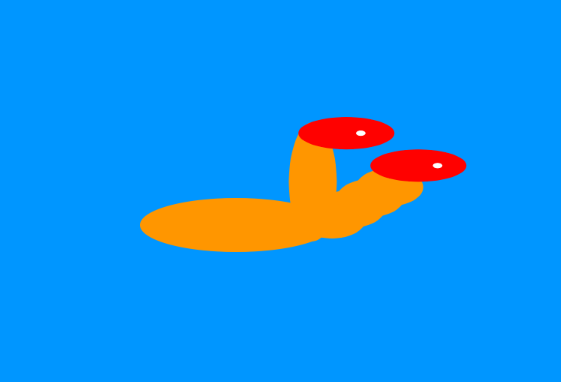

Creative Coding mit p5.js
Lerne JavaScript kennen und programmiere ein animiertes Fabelwesen.
JavaScript
JavaScript, kurz JS, ist eine weitverbreitete Skriptsprache, die im Jahr 1995 für die dynamische Gestaltung von HTML entwickelt wurde. Heutzutage wird JavaScript jedoch nicht nur im Browser verwendet, sondern auch in vielen anderen Anwendungen, darunter in den Bereichen:
- Webentwicklung
- Mobile App-Entwicklung
- Serverseitige Anwendungen
- Spieleentwicklung
- Datenvisualisierung
- Automatisierung
- Künstliche Intelligenz und maschinelles Lernen
JavaScript hat sich zu einer äußerst vielseitigen Sprache entwickelt und wird in unterschiedlichsten technologischen Kontexten eingesetzt.
Hydra
Das Ungeheuer Hydra ist ein vielköpfiges Fabelwesen aus der griechischen Mythologie, das oft als Wasserschlange beschrieben wird. Hydra ist ein häufiges Motiv in Wappen und wird in der Regel mit sieben Köpfen dargestellt. Die Hydra ist berühmt für ihre Unbesiegbarkeit, da sie bei jedem Köpfchen, das abgetrennt wurde, zwei neue nachwachsen liess. Fime in denen Hydra als Fabelwesen vorkommt:
- "Hercules" (1997) - Ein Zeichentrickfilm von Disney, in dem Hercules gegen die Hydra kämpft.
- "Jason and the Argonauts" (1963) - Ein Fantasyfilm, der auf der griechischen Mythologie basiert und die Hydra als eine der Kreaturen zeigt, gegen die Jason kämpft.
- "Percy Jackson - Diebe im Olymp" (2010) - Eine Verfilmung des gleichnamigen Romans, in dem die Hydra als eine der mythologischen Gefahren auftaucht, denen die Hauptfiguren begegnen.
Man sagt, dass die Hydra im Süden Griechenlands in den Sümpfen von Lerna in Argolis wächst. Dies verleiht ihr auch den Namen 'die Lernäische Schlange'. Es wird behauptet, dass die Hydra immer wieder an Land kommt, Felder verwüstet und Viehherden zerreisst.
Fazit
Ich fand das Wochenthema sehr spannend, und es hat mir gut gefallen. Die Aufgaben waren meiner Meinung nach zwar etwas schwer zu lösen, insbesondere, weil ich fast nie im Internet Informationen gefunden habe, um Lösungsansätze zu finden.